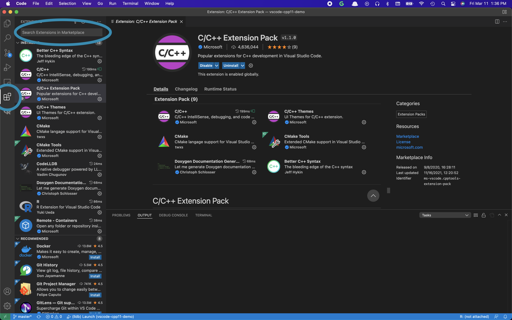
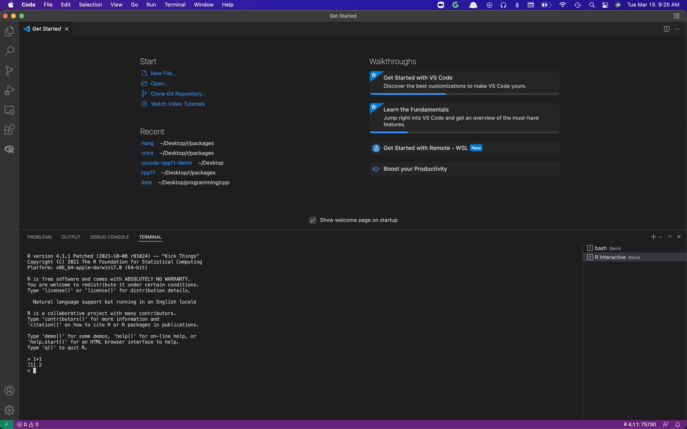
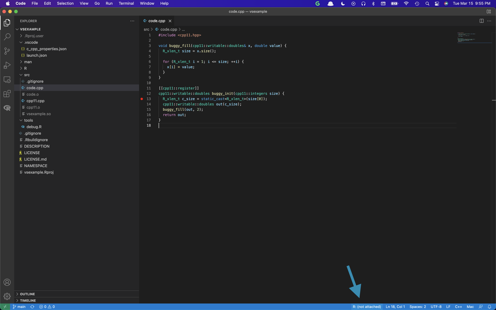
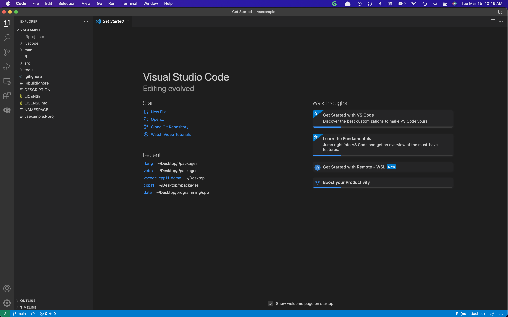
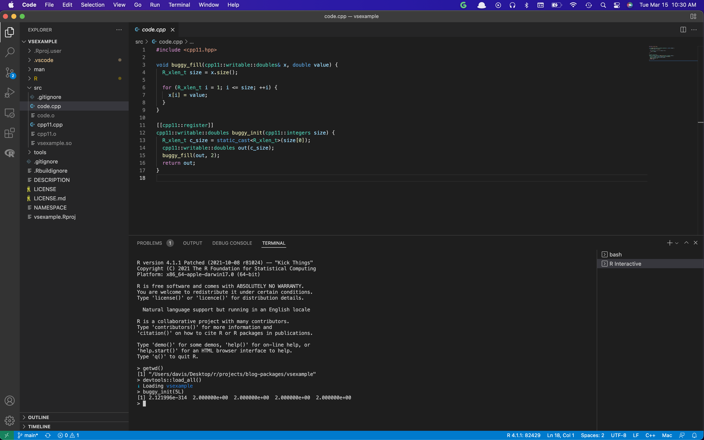
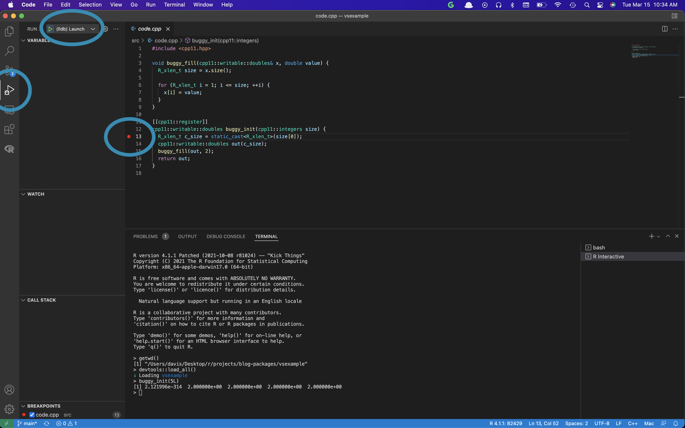
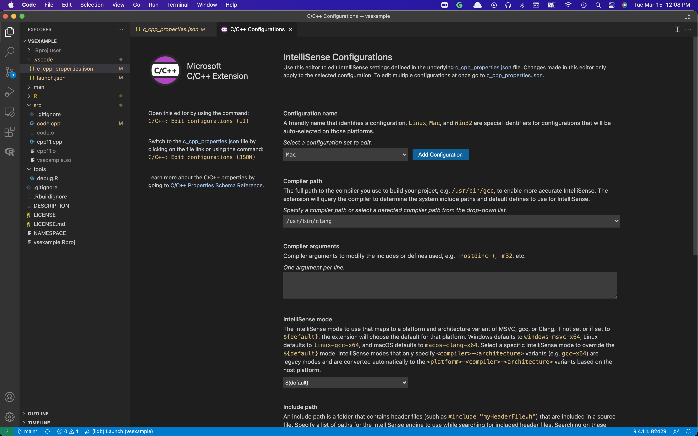
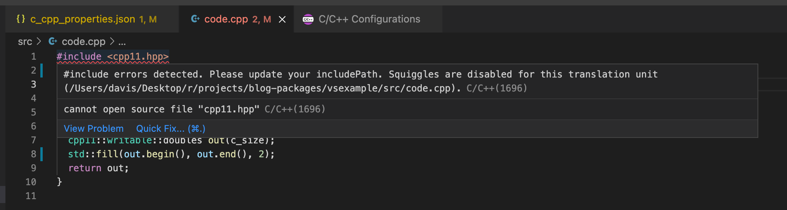

usethis::create_from_github("DavisVaughan/vsexample", destdir = "{your/parent/folder}")This post is intended to serve as a reference for R package developers that use C or C++ code inside their package. RStudio is a fantastic IDE for R code, and has an amazing debugger built in, but sometimes you need to use a different tool for debugging C++ code. In a previous post, I’ve talked about how to use lldb to debug an R package with C++ code. While this works, it lacks the elegance and ease of use that we typically expect from a full fledged debugger, i.e. setting breakpoints by clicking on the line we care about, clicking to step over or into functions, easily watching local variables change, etc. Unsurprisingly, the C++ community has built a number of tools that do have support for this, one of them being VS Code with C++ extensions, but the R community hasn’t latched on to any of these yet. In the remainder of this post, I’ll show how to set up VS Code to debug an R package containing C++ code, which should hopefully make this tool more accessible to the R community.
If you haven’t yet read my post about using lldb (linked above and again here), then I’d encourage you to do that first, as it explains some of the basics and gotchas of using lldb with R. This post assumes a little working knowledge of lldb.
Most of this post would not be possible without the work of Kun Ren, who has a nice post on VS Code Extensions for R and an example repo on using VS Code with cpp11. While this post doesn’t take the exact same approach as his, it was still invaluable for getting started.
I have also had many discussions with and insights from Jenny Bryan while trying to get this to work smoothly.
If you are a VS Code expert and notice anything incorrect in this post, feel free to open an issue to help us improve it!
My specs
It is worth noting my personal setup, as the finer details of this post will vary a bit per operating system:
- macOS Monterey 12.2.1
- R 4.1.1 (Non-notarized! See the next section.)
If you aren’t using a Mac, the absolute paths set in the configuration files below will need to be updated!
Non-notarized R
The R for macOS FAQ has a bullet point named “I cannot attach a debugger to R.” This is particularly relevant for us, as it explains that new Apple computers require that all notarized applications use a “Hardened Runtime”, which ends up meaning that those applications can’t be utilized with a debugger like lldb. The R that you typically download is a notarized application, so it falls in this category.
To get around this, you can download a non-notarized and unhardened version of R for macOS from here instead. You’ll probably want the build that looks something like R-4.1-branch. Pay careful attention to the OS. If you have an M1 Mac, then you’ll probably want the version built for the big-sur OS. Otherwise you have an Intel Mac, so you’ll want the version built for the high-sierra OS, which works on any macOS >=10.13. It is generally easiest to install the package, i.e. R-4.1-branch.pkg, which comes with a GUI installer.
Downloading Visual Studio Code
Visual Studio Code (or VS Code for short), is a powerful IDE that supports many languages, including both R and C++. The first step on our journey is to download it from this link. Once you’ve downloaded it, go ahead and open it.
VS Code Extensions
VS Code is a generic IDE that has support for many languages through extensions. We will need a few extensions to get started:
- C/C++ Extension Pack: Contains the C/C++ syntax highlighting and debugging tools, along with a number of other nice tools.
- R Extension: The R extension for VS Code, which includes syntax highlighting, autocomplete, package management, and working with R Terminals inside VS Code. While not strictly necessary for us, this is pretty helpful.
- CodeLLDB: An lldb debugger packaged specifically for use with VS Code.
The easiest way to install extensions is to use the extension menu built into VS Code. It is on the left side of the screen, and looks like 4 blocks with one of the blocks pulled out. I’ve highlighted it in this image below, along with the search bar to use to search for these extensions.

Once you’ve downloaded the extensions, restart VS Code to ensure that they are fully activated. They should enable themselves by default.
VS Code exploration
It is worth taking a moment to explore VS Code for a moment. Since you installed the R extension, you have access to an interactive R terminal. You can access it by first opening the terminal window with Terminal -> New Terminal.

And then selecting an R Terminal using the drop down menu in the right corner of the terminal window.

This opens an R terminal where you can send commands:

Another easy way to access this R terminal is to click R: (not attached) at the bottom right hand corner of your screen. This bypasses the need to create a new terminal window.

Easy setup
The easiest way to actually get familiar with VS Code is to get dropped into a project that is already set up for you, so let’s do that. Open RStudio and run the following, substituting your preferred parent folder as destdir:
This example R package has a function named buggy_init() that we are going to be trying out. You give it a single integer size, and it should create a double vector of that size filled with 2s. If you try it out in RStudio, you should get something like this:
buggy_init(5L)
#> [1] 6.939327e-310 2.000000e+00 2.000000e+00 2.000000e+00 2.000000e+00That obviously doesn’t look right. We’ll use VS Code to figure out what is going on.
Go back to VS Code and click File -> Open... at the top. Navigate to the vsexample folder and hit Open. It should look like this:

On the left hand side you will see the files in the package directory. This is the Explorer window. If you open the src/ directory and then open code.cpp, you can see the C++ file that contains buggy_init().
If you open the R Terminal, you can devtools::load_all() and run buggy_init(5L) right there to see that there is a problem. VS Code’s R extension will automatically set the working directory to the project directory, which is pretty nice.

So let’s debug this thing. We don’t really know what is going on, so we are going to start by setting a breakpoint on the first line of buggy_init(), and then we are going to walk through it line by line. This is just like setting a breakpoint on an R file in RStudio, click to the left of the line number you want to set a breakpoint on, and a red circle should show up.
Then switch to the Run and Debug tab on the left hand side. At the top of the screen, you should see a green play arrow titled (lldb) Launch. We will discuss how this appeared in a bit, but for now just click it.

If all goes well, you should get something like this shown in the video below. Here I step through the function using the debugging menu that pops up in the top middle of the screen. You can print out variables along the way using the var command from lldb.
You’ll notice that some things aren’t working exactly right, in particular we see:
vsexample.so was compiled with optimization - stepping may behave oddly; variables may not be available.If you remember from my post on using lldb with R, we need to compile the package with optimization turned off to ensure that all of the debugging information is available. Luckily, this is easy. Run the following in the R Terminal of VS Code:
usethis::edit_r_makevars()This should open your user level Makevars file in VS Code. At a minimum, this should look like:
CXX11FLAGS=-O0 -gThis is a C++11 based project, so we need to use CXX11FLAGS to set the relevant flags. -O0 is used to instruct our compiler to compile without optimization and -g is used to ensure that all debugging information is included. Save this file and try to run (lldb) Launch again. This time it should work a little better. I obviously know exactly where the problem is here, so I’m going to narrow in on it fairly quickly.
Don’t forget to remove the
-O0 flag, or revert it back to -O2 after you are finished debugging! Forgetting to revert this flag can sometimes result in performance degradation for packages that you compile from source, because you are telling the compiler not to optimize the code.If you can’t tell from the video, I end up printing out the doubles vector at various points during the filling process. After the first iteration of the fill loop, we see that it filled in a 2 in the second spot of the vector rather than the first. After one more iteration of this, this was enough for me to figure out the problem. Our iteration bounds are off by 1! We were using 1-based indices (like R), but C++ uses 0-based indices. So:
for (R_xlen_t i = 1; i <= size; ++i) {should be:
for (R_xlen_t i = 0; i < size; ++i) {If you make that change and recompile the package, you should get:
buggy_init(5L)
#> [1] 2 2 2 2 2Note that cpp11 vectors have .begin() and .end() member functions, so we could have also included the <algorithm> header and used std::fill() for this, which probably would have avoided this bug from the start!
#include <cpp11.hpp>
#include <algorithm>
[[cpp11::register]]
cpp11::writable::doubles buggy_init(cpp11::integers size) {
R_xlen_t c_size = static_cast<R_xlen_t>(size[0]);
cpp11::writable::doubles out(c_size);
std::fill(out.begin(), out.end(), 2);
return out;
}Pretty cool, right?
Local variables
One other neat feature of VS Code’s debugger is the variables window in the top left corner. It changes dynamically as you step through the code, and is often an easier way to inspect an object quickly when compared with using var or expr in the console, take a look:
Launch configuration
So how does all this work? How did that (lldb) Launch button appear? How did it know to run buggy_init()? Good questions!
In the Explorer pane you should see a .vscode folder, and inside that folder you should see a launch.json file. Open that up.
VS Code has what are known as launch configurations. These perform some kind of language specific debugging action and pop up as an option in that Run and Debug menu. Here is ours:

Here are my best guess descriptions of each of these fields:
name: The name of the launch target. This shows up beside the green play button in Run and Debug.type: The type of launch target to use. To use our CodeLLDB extension, we have to set this tolldb.request: Whether this is alaunchorattachtype of configuration. We want VS Code to launch a new R session for us, but we can also have it attach to an existing one using its process ID (PID). We will keep this as launch for now, but at the end of this post I’ll also show an attach example.program: The path to the program to debug. This is OS specific, but most Mac users should have R in this location. In any case, the executable can generally be found below the folder revealed byR.home().args: Arguments to supply to theprogram. Here we supply--vanillato use a vanilla R session which doesn’t load in any history or saved workspaces and also does not load the usual start-up files. We then tell it to execute the commandsource('tools/debug.R')when it starts up the R session.env: A list of"name" : "value"pairs for environment variables to set before starting up theprogram. The only one we seem to need isR_HOME, which you can get by callingR.home()in a typical R session. This should be right for most Mac users already.terminal: Whether to use the Debug Console ("console"), the Integrated Terminal ("integrated") or an External Terminal (i.e. the Terminal application) ("external") for standard output from theprogram. This is user preference, but I find that using the"console"is the most useful with a launched R session because it means that the result of the lldb commandexpr Rf_PrintValue(x)shows up right in the Debug Console rather than in a separate terminal.stopOnEntry: Should the debugger immediately stop upon activation? This doesn’t stop at your first breakpoint, rather, this stops right when R opens up. It typically will show you some assembly code when it stops, which isn’t very useful.
debug.R
So the launch.json file controls what happens when the Run and Debug button is pressed, but what is in the tools/debug.R file that is being executed? Navigate to that now in the Explorer pane. It should have this in it:
The idea is that we set a breakpoint on a particular line, then Launch a new R session that compiles the code, loads it (at which point the breakpoints are locked in), and then tries to call some code that we know will pass through the C++ line where we put the breakpoint. Once the breakpoint is hit, we are free to step through the code and look around.
For your own projects, you’ll change buggy_init(5L) to whatever code triggers your breakpoint or crashes your session.
C++ Properties
The other file worth looking at is c_cpp_properties.json in the .vscode folder. This controls the C/C++ Extension that you installed. In particular, it handles IntelliSense, the autocompletion and syntax error generator for C++.
Open that up now:

An easier way to edit lines in this file is CMD+SHIFT+P to bring up the VS Code command palette, and search for (with the leading >!):
>C/C++: Edit Configurations (UI)
This brings up a user friendly way to edit this JSON file, with more descriptions about each field. Here is my short summary:
name: TypicallyMac,LinuxorWin32, this selects which configuration file to use. These 3 names are special in that the corresponding configuration will be auto-selected based on the OS you are on.includePath: Folders to include for the autocompletion and syntax error generation engine. This won’t affect the actual code compilation process, as that is handled by R itself and yourDESCRIPTIONandsrc/Makevarsfiles, but getting this right will improve your VS Code experience as you are tweaking your C++ files there. Two important things to note here are the inclusion of R’s headers, which live in"/Library/Frameworks/R.framework/Resources/include", and the headers specific to cpp11, which live in"/Library/Frameworks/R.framework/Versions/Current/Resources/library/cpp11/include". You should always include the R headers, but if your project uses Rcpp rather than cpp11, you could alter that line to be.../Rcpp/includeinstead. Basically, anything in yourLinkingTo:field of your DESCRIPTION file should be included here. Usesystem.file()to reveal where these headers are installed on your computer, e.g.system.file("include", package = "cpp11").macFrameworkPath: The path to the Mac framework folder which contains the system header files. This one doesn’t seem to be strictly necessary for this package, but may be useful for others.compilerPath: The compiler that would in theory be used to build the project. It also enables more accurate IntelliSense because from this the C++ standard library paths are inferred. This allows us to use things like#include <algorithm>and then autocomplete on everything in that header. It is probably fine to leave this as clang, but you can change it to gcc as well. The easiest way to do this is in the configuration UI mentioned earlier, under the Compiler path section.cStandard: Relevant if you are debugging C rather than C++ code (which does work!). R packages are typically compiled against C99, so this is probably a good default. Again, it controls how IntelliSense works.cppStandard: The C++ standard version to use for IntelliSense. cpp11 projects use C++11 by default, so that is what we have chosen here. It is typically a good default unless you know you need a different version.version: A version number managed by the configuration file. Don’t change this.
Let’s see what happens if we remove the cpp11 includePath, and then open up code.cpp:

This just means that you are missing something in includePath that you are trying to use in your C++ source files. Note that it won’t prevent you from running Run and Debug, and the script in debug.R will still compile fine. This just means that for the purposes of autocompletion and syntax errors, VS Code can’t find that cpp11.hpp file.
.Rbuildignore
It is worth quickly noting that the .vscode and tools directories should generally be committed to GitHub, but shouldn’t be included in the R package when it is sent to CRAN. You can avoid this by adding them to your .Rbuildignore. To do this manually, you can use:
usethis::use_build_ignore(c(".vscode", "tools"))There is also a helper function in the Setup function section at the bottom of this post that will do this for you, among other useful things.
Debugging a real rlang issue
I actually used VS Code to recently debug an rlang issue. We’ve already fixed the problem, but I’m going to walk through the issue in the following video to show how I tracked it down. It doesn’t use the typical lldb inspection tools, but instead uses the fact that I can step one line at a time to figure out where the exact issue is occurring from. Note that this video does have audio, unlike the others.
Attach configuration example
You can also attach the VS Code debugger to an existing R session. Note that if you want to set breakpoints and have them work reliably after attaching, you should attach to the R session before running devtools::load_all(). You’ll also need get the PID for the R session. The easiest way to do this is with either Sys.getpid() or ps::ps_pid().
You’ll also need an attach configuration set in launch.json. You can append to your existing configuration and set something up that looks like this:
{
"version": "0.2.0",
"configurations": [
{
"name": "(lldb) Launch",
"type": "lldb",
"request": "launch",
"program": "/Library/Frameworks/R.framework/Resources/bin/exec/R",
"args": [
"--vanilla",
"-e",
"source('tools/debug.R')"
],
"env": {
"R_HOME" : "/Library/Frameworks/R.framework/Resources"
},
"terminal": "console",
"stopOnEntry": false
},
{
"name": "(lldb) Attach",
"type": "lldb",
"request": "attach",
"pid": "${command:pickMyProcess}",
"stopOnEntry": false
}
]
}Here is an example video of attaching in action:
One nice thing about attaching is that after exiting the debugger the R session is still alive, so you can run the same function again to jump back into the debugger.
Tips
Below are a few other tips and gotchas we have learned while working with VS Code.
C++ Template Classes
C++ template classes are a bit tricky to debug. The cpp11 doubles vector is an example of this, it is a template class on cpp11::r_vector<double>. This class has a member function called .at() which will return the element at a specific location.
Now, if you try and call expr out.at(0) while debugging our code.cpp example, which doesn’t use .at() at all, you will probably run into issues like this:
expr out.at(0)
error: expression failed to parse:
error: Couldn't lookup symbols:
__ZNK5cpp118writable8r_vectorIdE2atEiBecause we didn’t use .at() anywhere in the code, the compiler never generated code for it. This isn’t being “optimized out” at all, it was just never generated at all to begin with. We haven’t found a great solution to this issue yet, but generally you can always access the internal SEXP of a cpp11 vector with x.data_, and then you can call any C level R function on that, like REAL_ELT(x.data_, 0), in place of the .at() call.
We have had partial success by explicitly instantiating the template class ahead of time, although this has not proven to be universally successful yet (in particular, it has failed to compile when used with the writable vectors in cpp11). This involves placing a line like this after #include <cpp11.hpp>, but before any code that tries to use a doubles vector.
template class cpp11::r_vector<double>;This forces the compiler to fully instantiate all of doubles, including all of its member functions, meaning they are available to you at debug time. If you do this, it is probably a good idea to remove this line after you have finished debugging.
Settings
If you hit Command + , (i.e. command and comma), then you will be taken to a general settings menu for VS Code. You should see a tab for User (global settings) and Workspace (settings for this workspace in particular).
There are a number of Commonly Used settings, one in particular is Tab Size, which defaults to 4, but is 2 in RStudio. You may want to update this.
Setup function
Since you have to set up each R package with:
- A
.vscodefolder withlaunch.jsonandc_cpp_properties.json - A
toolsfolder withdebug.R - An
.Rbuildignorethat ignores these
It seemed useful to wrap this up in a function. You can call this function from RStudio after opening up the Rproj file of the R package that you want to debug.
use_vscode_debug <- function() {
launch <- c(
'{',
' "version": "0.2.0",',
' "configurations": [',
' {',
' "name": "(lldb) Launch",',
' "type": "lldb",',
' "request": "launch",',
' "program": "/Library/Frameworks/R.framework/Resources/bin/exec/R",',
' "args": [',
' "--vanilla",',
' "-e",',
' "source(\'tools/debug.R\')"',
' ],',
' "env": {',
' "R_HOME" : "/Library/Frameworks/R.framework/Resources"',
' },',
' "terminal": "console",',
' "stopOnEntry": false',
' },',
' {',
' "name": "(lldb) Attach",',
' "type": "lldb",',
' "request": "attach",',
' "pid": "${command:pickMyProcess}",',
' "stopOnEntry": false',
' }',
' ]',
'}'
)
properties <- c(
'{',
' "configurations": [',
' {',
' "name": "Mac",',
' "includePath": [',
' "${workspaceFolder}/**",',
' "/Library/Frameworks/R.framework/Resources/include",',
' "/Library/Frameworks/R.framework/Versions/Current/Resources/library/cpp11/include"',
' ],',
' "defines": [],',
' "macFrameworkPath": [',
' "/Library/Developer/CommandLineTools/SDKs/MacOSX.sdk/System/Library/Frameworks"',
' ],',
' "compilerPath": "/usr/bin/clang",',
' "cStandard": "c99",',
' "cppStandard": "c++11"',
' }',
' ],',
' "version": 4',
'}'
)
debug <- c(
'devtools::clean_dll()',
'devtools::load_all()',
'',
'1 + 1'
)
usethis::use_directory(".vscode", ignore = TRUE)
usethis::write_over(".vscode/launch.json", lines = launch)
usethis::write_over(".vscode/c_cpp_properties.json", lines = properties)
usethis::use_directory("tools", ignore = TRUE)
usethis::write_over("tools/debug.R", lines = debug)
}References
- My recommendations of VS Code extensions for R
- VS Code cpp11 Demo. This doesn’t use CodeLLDB, but instead uses the built in lldb that comes with Mac. I found that the CodeLLDB experience was much smoother.
- CodeLLDB Manual, with documentation for all of the configuration arguments.